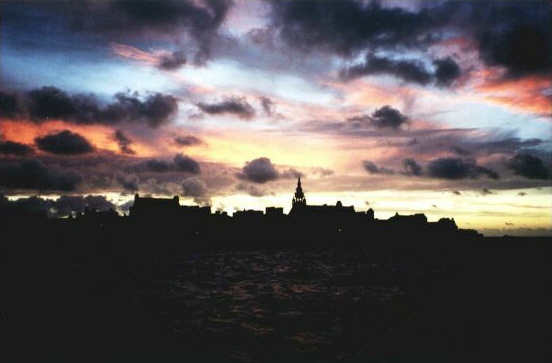

XVI INEFFABLE BEAUTE
Le soleil roue au carrefour des tornades.
Le violet cru heurte la paille et le vert.
Fleur - ou plutôt rouge danse de ménades
Epanouie en quelque calice ouvert.
Falaises chant où des tendresses de nacre
Croulent à pic près de convulsés fusains.
Engloutissement quand se bousculent d'âcres
Citrons jaunes et les perles des raisins.
Paix. Ni l'essor de la fleur hors de la gangue,
Ni le dessin qui le tumulte régit
Ne prévaudront sur le discours d'outre langue.
Silence. Une cruelle beauté surgit.
Rompez amarres, dispersez les trop sages.
Que les regards explosent aux horizons
Jusqu'à l'île que n'atteignent les langages.
J'aurai connu le silence et les saisons.
Michel Galiana (c) 1991
XVI INEFFABLE BEAUTY
The sun wheels its tail where the tornadoes gather
And crude purple clashes with cornsilk and soft green.
A flower – a red maenadic dancing rather -
That opens out and spreads in a calyx of beams.
Song-cliffs from which mother-of-pearl tones so tender
Tumble down straight upon convulsed charcoal shapes,
Jostling acrid hues engulfing one another:
Yellow lemon dotted about with beads of grapes.
Peace! Neither the flower’s rise from its green coating
Nor the drawing’s attempt with the tumult to merge
May prevail over speech from over-tongue pouring
Be silent and behold the cruel beauty that surges.
Time to break the moorings! Dismiss the stern sages!
And let our gazes burst over the horizons,
Toward the island out of reach for languages!
I shall have experienced silence and the seasons!
Listen to "Unspeakable beauty" in English
Transl. Christian Souchon 01.01.2005 -2026 (c) (r) All rights reserved
Michel disait qu'un ciel sans nuages est un ciel imbécile. Il savait aussi que le langage était impuissant à décrire la beauté de leurs couleurs et de leurs formes. Accéder à la beauté par le langage est un dilemme dont parle aussi le poème Beauté.
Michel said that a cloudless sky is a stupid sky. He also knew that language was powerless to describe the beauty in colour and shape of certain skies. Accessing beauty through language is a dilemma also discussed in the poem Beauté.